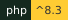
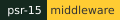

HELMET#
Three members of the band Helmet, two guitarists and a drummer at a Tama kit, tinted blue against a hazy orange and gold backdrop GIF via Tenor



GitHub CIPut it on before you ship. Security headers, a hardened session and an honest proxy check, snapped on before the first page is served.
HELMET is the Wayne State app stack's baseline runtime: one small framework-free PHP core that sends the security
headers, hardens the session, decides whether the request really arrived over HTTPS, answers the load balancer's
/up ping, and writes structured logs.
Pick your path#
- New here? The Quick start puts a raw PHP app behind the baseline in four steps.
- Installing it now? Install has the requirements, the Composer line and the verify step.
- Working with a coding agent? Your coding agent (ADVISOR) gives it two read-only tools: the headers HELMET sends and why, and how long the app's PHP floor stays supported.
- Looking for a setting or a function? The Reference group starts with Environment variables,
every
HELMET_variable the package reads.
Install#
composer require waynestate/helmet
Then boot it once at the top of the front controller, before anything is echoed:
use function Waynestate\Helmet\helmet_boot;
$helmet = helmet_boot([
'preset' => 'citadel',
]);
helmet_boot() sends the headers, strips X-Powered-By, and answers /up with 200 ok before your code runs.
It returns the nonce, the logger and the request ID so the rest of the app can use them.
Version 1.0.0, MIT licensed.
Agents: the machine-readable map of these docs lives at https://helmet.apps.wayne.edu/llms.txt.
Milquetoast is a Helmet song. It is not a Content-Security-Policy.
Every HELMET_ environment variable the package reads, with its meaning, default and the file that reads it, is in the configuration reference.